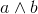
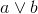

N-queens problem
You have probably seen this problem before: chessboard queens might attack horizontally, vertically and diagonally. Our problem is to place N queens on a N by N chessboard so that no two of the queens attack each other.
Solving the 4-queens problems
We will first take a look on how we can solve the 4-queens problem with SAT solving. The problem can be encoded as a set of booleans, where each boolean represents one cell of the chessboard. If the boolean is set to true, there is a queen on the cell, and is false the cell is empty.
Z3: what you will need
For this problem, you will need to write only basic s-expressions in SMT-LIB v2 for z3 to solve. First, here how to declare a boolean variable:
If you want to add a clause to the solver, use the assert construct. For example we want to add the formula :
Some other operators on booleans:  : (or b a) : (not a)
Once you have provided all the formulas you can ask the solver if they are satisfiable (meaning the solver can find an interpretation for all the user defined variables that make all the assertions true):
You can even ask the solver to provide an interpretation (a model):
Defining the variables we need
We first have to define the variables we need, and then we will slowly add constraints to the problem. For the 4-queens problem, we want to model each cell of the chessboard, so let us declare 16 booleans:
Now we will gradually add the constraint of the problem, by encoding them as propositional formulas where the atoms are the variables we just declared. Then we have to find a formula that will encode the different constraints that we have. First, there should be 4 queens on the board. But we can't use natural numbers here, so one way to express this is to remark that with our constraints, there should be at least one queen per line. So for each line i we have (or xiy0 xiy1 xiy2 xiy3) that gives us:
Now we need to encode the "two queens should never be on the same line" constraint in a formula. Another way of expressing the constraint is to say that there cannot be two queens one the same line. For the first line, we want the following formula to be statisfiable: (not (or (and x0y1 x0y0) (and x0y2 x0y0) (and x0y2 x0y1) (and x0y3 x0y0) (and x0y3 x0y1) (and x0y3 x0y2))) which means we cannnot find a pair of cells that are both set to true. Since we have 4 cells in a line we have 6 pairs to check. For the four lines:
The formulas for the "two queens should be never be on the same column" constraints look very similar and we just need to transpose the previous ones:
Now we have one set of constraints left : "two queens should never be on the same diagonal". The shape of the formula is similar, we have a negation over a disjunction of the "bad cases" where two cells on the same diagonal contain a queen. In the SMT-LIB v2 language, for the central diagonal from top-left two bottom-right corner of the board it translates to : (not (or(and x1y0 x0y0) (and x2y0 x0y0) (and x2y0 x1y0) (and x3y0 x0y0) (and x3y0 x1y0) (and x3y0 x2y0))) We have ten diagonals - five in each direction, and a single cell doesn't count - so we add ten cosntraints.
The size of the formulas grows exponentially with the size of the problem, so it becomes difficult (and bothersome) to express constraints for bigger problems. However, you can easily try to write a script that generates such formulas !